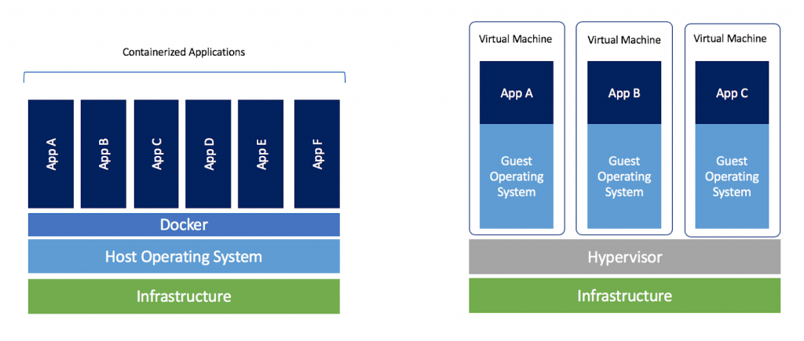
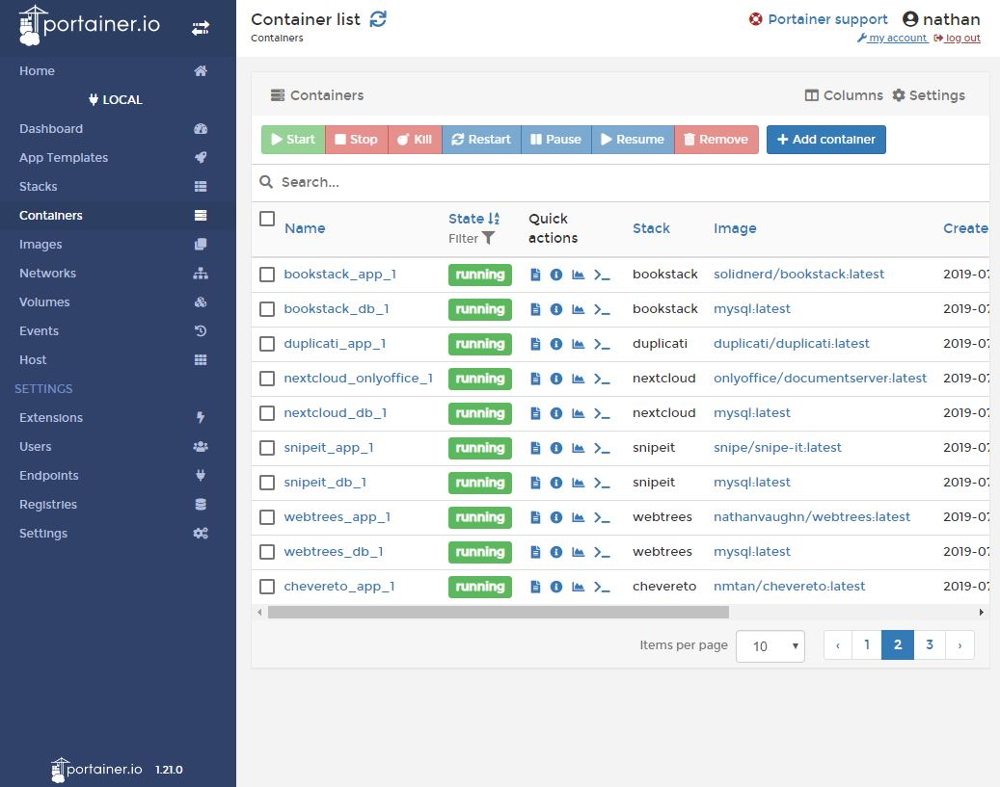
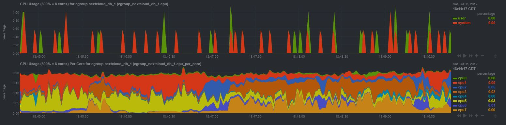
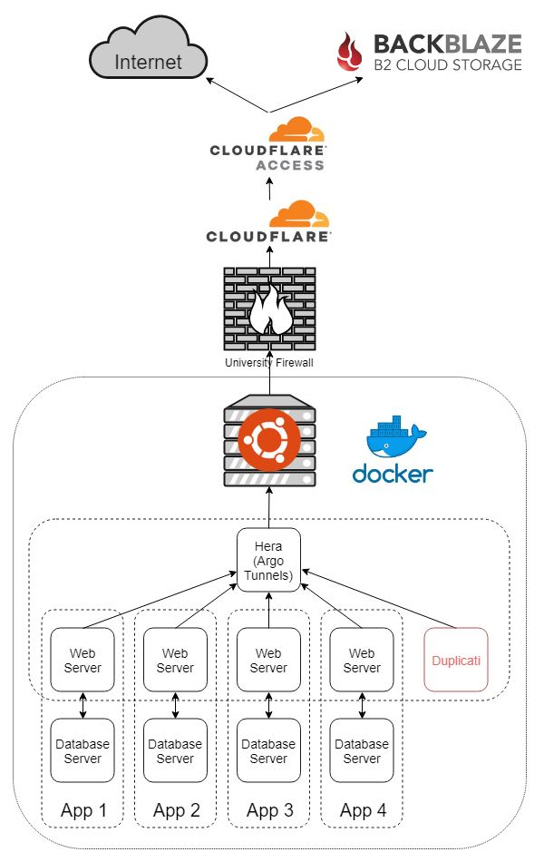

Self-Hosting with Docker and Argo Tunnel
Table of Contents
Background
For the past few years, I’ve rented a VPS to host some web apps for myself. I’ve done this since I’ve lived in college apartments behind a NAT and I wanted to be able to access these services from the outside world. Also, running locally, I wouldn’t be able to setup HTTPS other than self-signed certs. Yuck.
However, with Cloudflare’s new service,
Argo Tunnel,
and poor financial decisions a server I bought on Craigslist,
I decided to move my apps to be hosted on-premise.
Decision to Use Docker
Previously, my $5/month Linode VPS only had 1GB of RAM, so memory was at a premium. Because of this, I exclusively used applications built on a LAMP stack so they could share each other’s stack. While this did help with memory, security wasn’t great, and incompatibilities between things like MySQL and PHP versions made life difficult. This is also significantly limited what apps I could use for myself.
Now that I have a server with more memory than I know what to do with, I wanted to try out some virtualization technologies. I figured if the experiment went well, I would move all my applications to my server. I decided to try out Docker and containerization first since that’s all the rage now. If Docker didn’t work out, I would try traditional VMs with VSphere, ESXi, Proxmox, or something.
What Are Containers
Docker containers behave a lot like Virtual Machines (VMs). However, under-the-hood, they’re completely different. Instead of running a full-blown operating system, they actually share the host’s kernel, and run off of that. The processes inside a container are actually processes under the host OS. However, to the processes in the container, it’s like they are in their own OS. The filesystem is sandboxed from the host (unless you decide to provide access to specific directories) and containers even get their own network interface. Compared to VMs, containers have a much lower memory footprint, and are super fast to start. Neat!
nathan@zeus:[~]$ sudo /usr/bin/landscape-sysinfo
System load: 0.15
Usage of /: 18.1% of 133.52GB
Memory usage: 10%
Swap usage: 0%
Processes: 377
Users logged in: 1
IP address for enp22s0f1: 172.20.1.193
IP address for br-d99eb9eae6a2: 172.22.0.1
IP address for docker0: 172.17.0.1
IP address for br-48843a63cc0c: 172.24.0.1
IP address for br-b799383b2034: 172.26.0.1
IP address for br-ab6f5666082e: 172.27.0.1
IP address for br-e2cb99d7f99f: 172.28.0.1
IP address for br-fb8873ceab0c: 172.30.0.1
IP address for br-87cfeddb1a48: 172.31.0.1
IP address for br-47045830e86b: 192.168.0.1
IP address for br-7799754001bc: 192.168.32.1
IP address for br-3780ddef1e2f: 192.168.64.1
Docker Setup
After choosing to try out containers with Docker,
I quickly decided upon using Docker Compose rather
than standard Docker. As far as I can tell, Docker Compose and Docker will let you
do the same things, but Docker Compose allows you to create defined .yml files
to run multi-container applications. To me, it seems like the difference is really just
defining your configuration in a file rather than the command line.
Instead of this:
docker run -d --restart unless-stopped --log-opt max-size=10m \
-v freshrss-data:/var/www/FreshRSS/data \
-e CRON_MIN=4,34 \
-e TZ=Europe/Paris \
--label traefik.port=80 \
--label traefik.frontend.rule=Host:freshrss.example.net \
--label traefik.frontend.headers.forceSTSHeader=true \
--label traefik.frontend.headers.STSSeconds=31536000 \
--name freshrss freshrss/freshrssYou have this:
version: '3'
services:
freshrss:
container_name: freshrss
image: freshrss/freshrss
environment:
- CRON_MIN=4,34
- TZ=Europe/Paris
volumes:
- 'freshrss-data:/var/www/FreshRSS/data'
restart: unless-stopped
labels:
- traefik.port=80
- traefik.frontend.rule=Host:freshrss.example.net
- traefik.frontend.headers.forceSTSHeader=true
- traefik.frontend.headers.STSSeconds=31536000Working off some examples, I made a Docker Compose file for each of my applications, each in their own folder. For security, I have every app restricted to their own network (which Docker Compose will do by default).
~/dockerfiles
│
└───app1
│ │ docker-compose.yml
│
└───app2
│ │ docker-compose.yml
│ │ .env
│
...For applications that need it, I also opted to create an environment file which contains
secrets like the MySQL account password, rather putting secrets in the actual config
files which are tracked by Git. This is easily done with the env_file
parameter in the docker-compose.yml file. I go into this more below.
env_file:
- ./.envIn order to start or stop them all quickly, I wrote a small Python script which will
sudo docker-compose up -d or sudo docker-compose down all the
various Compose stacks.
Networking
This is where the real key is. Since my server lives behind a university firewall, and I want to access applications running on it from the outside world, I need to use some sort of tunnel. I opted to use Cloudflare’s new service, Argo Tunnel to accomplish this. Basically, you install the command-line client on your server. You connect it to your locally running application, it automatically creates a persistent tunnel into Cloudflare’s network, and creates the appropriate DNS record for your domain. Argo Tunnel is included free with Argo which is $5/month/domain. It’s also $0.10/GB of bandwidth after the first gigabyte per month. The only limit is a hard cap of 1000 tunnels per account. So far so good.
However, Cloudflare’s official instructions of how to use Argo Tunnel with Docker containers kind of suck and is very manual. No good. I initially tried to use an nginx reverse proxy and have a single tunnel coming out of the Docker host, but wasn’t able to get it to work. Then, I came across Hera.
Hera is a Docker container which automatically monitors your containers and creates tunnels based on two labels you apply to your containers. This was perfect! Every application could have it’s own tunnel independent of each other and it was completely automated. The only two labels you need to apply to each container is the desired hostname and the port the service runs on inside the container.
To make this work, I put all the containers that had a web server into a shared
network with the Hera container. I kept web servers and database servers in a stack
sharing their own private network like before. As I didn’t really want to create one
mega docker-compose.yml file, I have the Hera container create the network,
then all the web servers reference it as an external network.
Hera docker-compose.yml:
version: '3'
services:
app:
image: 'aschzero/hera:latest'
networks:
- tunnel
restart: unless-stopped
volumes:
- '/var/run/docker.sock:/var/run/docker.sock'
- '/home/nathan/certs:/certs'
networks:
tunnel:Sample application docker-compose.yml:
version: '3'
services:
app:
depends_on:
- db
image: 'app/app:latest'
labels:
hera.hostname: app.example.com
hera.port: '80'
networks:
- default
- hera_tunnel
ports:
- '127.0.0.1:1001:80'
restart: unless-stopped
volumes:
- 'app_data:/var/www/'
db:
image: 'mysql:latest'
networks:
- default
restart: unless-stopped
volumes:
- 'db_data:/var/lib/mysql'
networks:
default:
internal: true
hera_tunnel:
external: true
volumes:
app_data:
driver: local
db_data:
driver: localThe port being exposed to the host (1001 in the example above) isn’t important
as Hera only cares about the port inside the container. It just needs to be unique
as you can’t have duplicates. I simply started at 1000 and started counting up.
Yes, I could probably also just run a container with the cloudflared daemon as part of
each stack, but I didn’t see a regularly updated image available.
Note About Domains
Cloudflare Argo is billed per domain. This means without doubling your monthly cost,
you can’t create tunnels for two domains. I have a short domain I like to use for
image hosting and link shortening, so this sucked. However, I figured out a simple
workaround. Simply create the tunnel on your main domain to whatever subdomain you
want, then just CNAME your second domain to the tunnel subdomain.
Example:
Link Shortener (app) -> linkshortener.example.com (Tunnel) -> xmpl.com (CNAME DNS)Security
Now that I have my applications accessible from the outside world, I would like to secure them more than their built-in login forms. Niche software developed by amateur programmers isn’t always the most secure. For this, I opted to go with Cloudflare Access. This is a pretty cool service. Basically, this allows you to add authentication via a multitude of providers, in front of any application you have using Cloudflare DNS, with extremely granular control. The great thing is that it’s free for up to 5 users/month, even for the Premium offering. Yes, this does create a single point of failure for all of my applications, but Cloudflare outages are pretty rare and minimal.
Using Cloudflare Access, I’ve basically whitelisted all my services to only be able to be accessed by my Google Account. However, many applications have their own API routes with their own authentication, and can’t handle Cloudflare Access in front of it, so I have to create bypass rules for those.
Lastly, I bind the host port of each container to only the host so that it can’t be accessed even from the local network (my only exception to this right now is Nextcloud while I sync a bunch of data the first time to avoid paying for Argo bandwidth).
ports:
- '127.0.0.1:1001:80'Useful Tools
Portainer
Portainer is an absolutely incredible tool for managing Docker. You can easily view container logs, launch a console connected to a container, start and stop containers, manage volumes and networks, and more all from a web interface. It makes interacting with Docker so much easier.

Netdata
While not specifically Docker-related, I recently found out about Netdata. Netdata is an all-in-one performance monitoring tool for Linux servers. While similar to Grafana + Prometheus, the appeal is that everything is configured out-of-the-box. It’s a really beautiful interface with a ton of statistics available. While not particularly customizable, the amount of information is immense, and it integrates well with Docker so you can see which container specifically is hogging all your CPU.

Backups
One of the most important parts of any hosting operation is backups. I backup the data and configurations I use for Docker in 3 places.
Docker Compose files
The Docker Compose files I’ve built are stored in a private Git repository on my GitHub account.
Docker Secrets
All of my secrets (MySQL passwords, SMTP login, etc.) are stored as secure notes in my LastPass account.
Data
Every night, I have setup an instance of Duplicati
to backup the entire contents of /var/lib/docker/volumes to a
Backblaze B2 bucket,
and email me a report.
While I probably should stop all containers before doing this, in a low
usage-scenario like mine, I’ve never had any issues. I chose to use Backblaze B2
versus AWS S3 or Google Cloud because I’ve been a big fan of their
service for a long time, and their pricing is really good
($0.005/GB/month with the first 10GB free).
Automation
As much as I love tinkering with things, I do like making the machines work for me.
Docker Container Updates
Every night, an instance of Watchtower runs and updates any container which has a new image version available. While probably not the best for a true production environment, as this is just for myself, I don’t mind living life dangerously.
Host OS Updates
I setup both apticron and unattended-upgrades on the Ubuntu Server host
so that I get emails about available package updates, and automatic security
update reports.
Automated Backups
As mentioned above, a Duplicati container creates a backup every night and emails a report.
Conclusion

Things I’m Happy With
Overall, I’m extremely pleased with how everything turned out. I understand all the
hype of containers now. Containers make it so easy to quickly run applications
in a consistent way in a pseudo virtual machine. I’ve really come to love them just for
trying things out. Instead of launching a new VM just to try to
remember the proper flags for a tar command, I can quickly
launch a disposable Ubuntu container and be immediately dumped into a shell.
sudo docker run -it ubuntuAll in all, my applications now are running on my server in my apartment while being securely accessible from the outside world, while costing nearly the same as before. Everything is automatically updated along with nightly off-site backups with email reports.
Things I’m Not Happy With
Docker MySQL
With hosting all my apps on the same stack in the past, they all shared the same MySQL server. Now, with Docker, every application has its own MySQL server, as there is no easy way to have multiple databases and users created automatically with the MySQL Docker image without creating some special bash scripts. This just seems strange to me, as SQL servers are meant to handle multiple databases, and running a bunch of extra instances is a lot of unnecessary memory overhead.
Docker Secrets
I feel like Docker doesn’t really have a great way to manage secrets. Right now, you can create secrets with Docker, but they are only made available to containers via files and are only available for Docker Swarms. This sucks, because nearly every container uses environment variables to handle secrets. Unless you add some shims to your Dockerfiles to support loading values from files into environment variables, you’re out of luck. This essentially forces you to either pass them on the command-line, or put them into environment files.
Argo Pricing
Cloudflare Argo charges $0.10/GB after the first gigabyte of data. This means I have be very careful in what I upload/download from my server via the tunnels, especially with bandwidth heavy stuff like Nextcloud. Unfortunately, really solving this problem would require me to use a different service which charges differently, or hosting my own solution, which I talk about more below.
Future Work
The biggest limitation that bothers me is that Argo Tunnel only works for HTTP traffic.
This means that I can’t run any sort of game servers that work over TCP traffic
without using a service like Serveo or ngrok
on an ad-hoc basis. I could use a f1-micro instance in the free-tier of
Google Cloud to run
a server with Serveo or frp or something.
However, I really like how well Argo Tunnel Just Works™ with Hera. I could
also potentially restructure everything with a Traefik reverse-proxy on the Docker
host, and then use an ngrok tunnel for the same price, as ngrok allows
tunneling TCP traffic, and doesn’t charge based on bandwidth usage.
However, I have more faith in Cloudflare as a significantly larger company with a
long history.